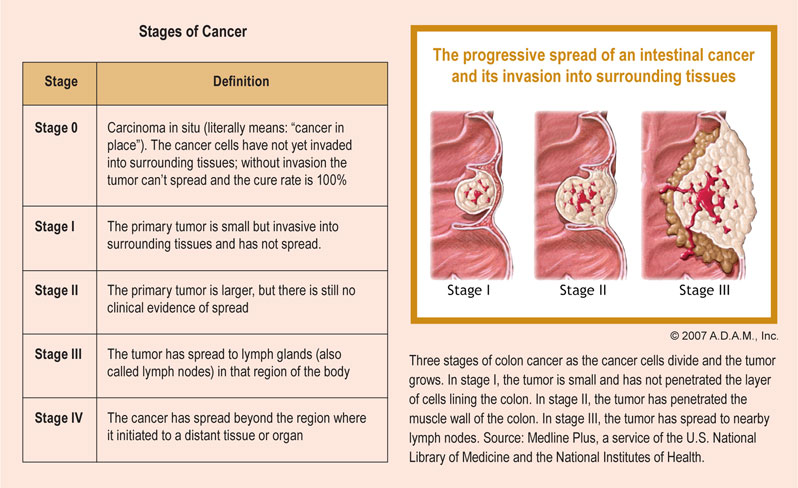

The most commonly used colorectal cancer staging system is known as the TNM system, which has been established by the American Joint Committee on Cancer. The TNM staging system looks at three key factors to determine the stage of cancer: Tumor (T) looks at how far the primary tumor has grown into the wall of the colon or rectum, and if it has expanded into nearby areas. Lymph node (N) examines the extent of the cancer spread to nearby lymph nodes. Metastasis (M) refers to whether cancer has spread to other parts of the body, such as the liver, lungs or brain. A number (0-4) or the letter X is assigned to each factor. Using this colorectal cancer staging system, a higher number indicates increasing severity. For instance, a T1 score indicates a smaller tumor than a T2 score. The letter X means the information could not be assessed. Once the T, N and M scores have been assigned, an overall stage is determined, and thus treatment options can be explored.
Primary tumor (T), The primary tumor can be categorized as T0 up to T4 for colorectal cancer. Below is a further description of how tumors are defined using the TNM staging system. TX: The main tumor cannot be assessed. T0: There is no evidence of a primary tumor. Tis (carcinoma in situ): In situ means that the cancer is in the earliest stage, and it has not grown beyond the lining of the colon or rectum. T1: The tumor has grown through the lining (muscularis mucosa) of the colon or rectum. T2: The tumor has expanded through the second layer of lining (submucosa) of the colon or rectum and into the outer layer (muscularis propria). T3: The cancer has grown through the muscularis propria and into the outer layers of the colon or rectum, but not all the way through. The cancer has not spread to any nearby organs or tissue. T4a: The cancer has grown all the way through the wall of the colon or rectum, and has expanded to the surface of nearby organs. T4b: The cancer has grown through the wall of the colon or rectum and has now affected nearby tissues or organs. Regional lymph nodes (N) N0: The cancer has not spread into the lymph nodes. N1: The cancer has spread to 1 to 3 regional lymph nodes. N2: The cancer has spread to more than 4 regional lymph nodes. N2a: Cancerous cells have been located in 4 to 6 regional lymph nodes. N2b: Cancerous cells have been found in more than 7 lymph nodes. Distant metastasis (M) M0: The cancer has not spread to distant organs. M1: The cancer has spread to distant organs. M1a: Cancerous cells have spread to one distant organ. M1b: Cancerous cells have spread to more than one distant organ.